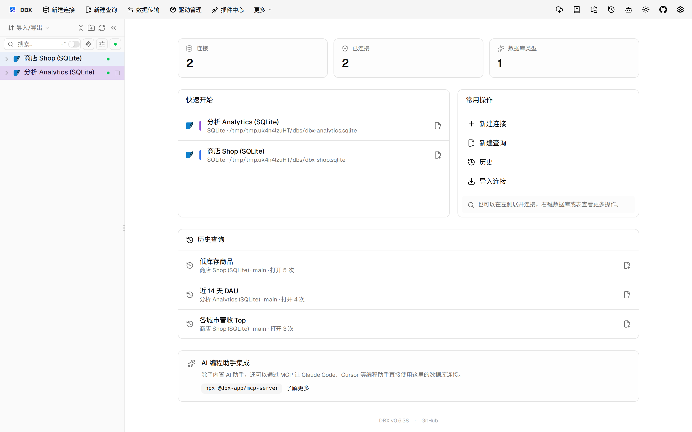
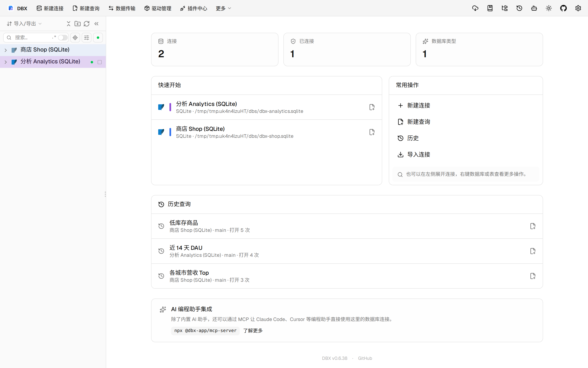

#11539 界面预览
commit d91abfc · 回到 PR · 这次 PR 给 OceanBase Oracle 增加了按元数据克隆表结构的专用流程：克隆前会弹出说明与目标 schema 输入，执行时改为逐步 DDL 并展示复制/排除内容。侧栏对象列表也改成 OceanBase 的分页加载，新增“加载更多”和分页搜索提示，且关闭了这类列表里的部分排序交互。
⚠️ 这次录制有 5 步没能按计划执行；带 ⚠️ 的截图拍摄于步骤失败之后，画面未必是说明文字所描述的状态。
红线是鼠标走过的轨迹，红色圆环是一次点击；底部文字是这一步在做什么。多个场景各自从应用初始状态开始。空格暂停，← → 逐段查看。

⚠️ OceanBase 克隆确认 · 侧边栏连接树展开到数据库层，查看各连接下的 main 默认库
 ⚠️ OceanBase 对象分页 · 打开 events 表后的数据网格
⚠️ OceanBase 对象分页 · 打开 events 表后的数据网格

⚠️ OceanBase 对象分页 · 对象列表底部的分页加载区域，查看加载更多与顺序提示